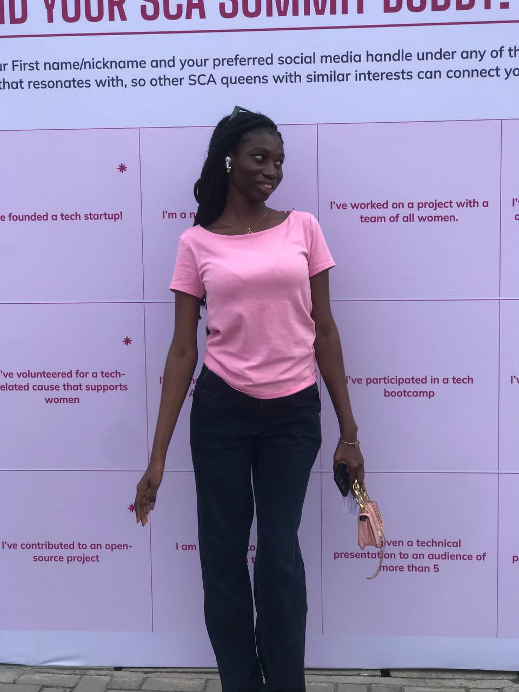

Frontend Developer | Pharmacy Student | Tech Entrepreneur
My journey into the world of technology began at the age of 12, sparked by an insatiable curiosity about how the digital world works. What started as simple experiments with code has blossomed into a passionate pursuit of creating meaningful digital experiences through frontend development.
From my first line of code, I knew I had discovered something special. The ability to transform ideas into interactive realities captivated me, leading me to dive deep into the world of web development. Each new concept mastered, every problem solved, fueled my desire to learn more and push my boundaries further.
Currently, I'm pursuing a Doctor of Pharmacy degree at the University of Lagos, building upon my strong foundation from Queens College. This unique combination of pharmaceutical sciences and technology represents my belief in the power of interdisciplinary knowledge. While these fields might seem worlds apart, they share core principles of precision, problem-solving, and a deep commitment to improving people's lives.
As a Frontend Developer, I focus on creating intuitive and responsive user interfaces that make the web more accessible and enjoyable for everyone. My passion for video editing complements my development skills, allowing me to craft comprehensive digital experiences that engage and inspire. I'm currently enhancing my skills through focused learning at freeCodeCamp, constantly pushing myself to stay at the forefront of web development technologies.
My entrepreneurial journey is perhaps what defines me most. Despite my youth, I've founded a technology services company and academy, driven by a vision to bridge the gap between aspiration and achievement in the tech industry. This venture isn't just about business – it's about creating opportunities for others to discover and develop their potential in technology. Through my tech academy, I aim to guide others on their journey into technology, sharing the knowledge and insights I've gained along my path. I believe in the power of technology education to transform lives and create opportunities, just as it has done for me.
My goal is simple yet ambitious: to become the best version of myself while helping others do the same. I believe in continuous learning, pushing boundaries, and maintaining an unwavering commitment to growth. Whether it's mastering new development frameworks, exploring creative video editing techniques, or expanding my entrepreneurial ventures, I approach each challenge with enthusiasm and determination.
When I'm not coding or editing videos, I'm either:
I'm always open to new opportunities, collaborations, and conversations about technology, entrepreneurship, or how we can work together to create something amazing.